Understand Utilities Models
In this exercise, you will learn:
- To use the Substation Transformer Models included with Health and Predict - Utilities (HPU).
- Create a Score Group for Substation Transformer Assets.
- Update and Schedule Notebooks for Utilities.
- Troubleshoot Notebooks for Utilities.
Pre-requisites
Ensure you have access to :
-
MAS v8.7 Health and Predict Utilities
-
HPU dataloader URL
-
Waston studio access
-
Sample ST(Substation Transformer) data for HPU, and make sure required data are loaded through dataloader via App Connect. Check out the sample data folder structure as below.
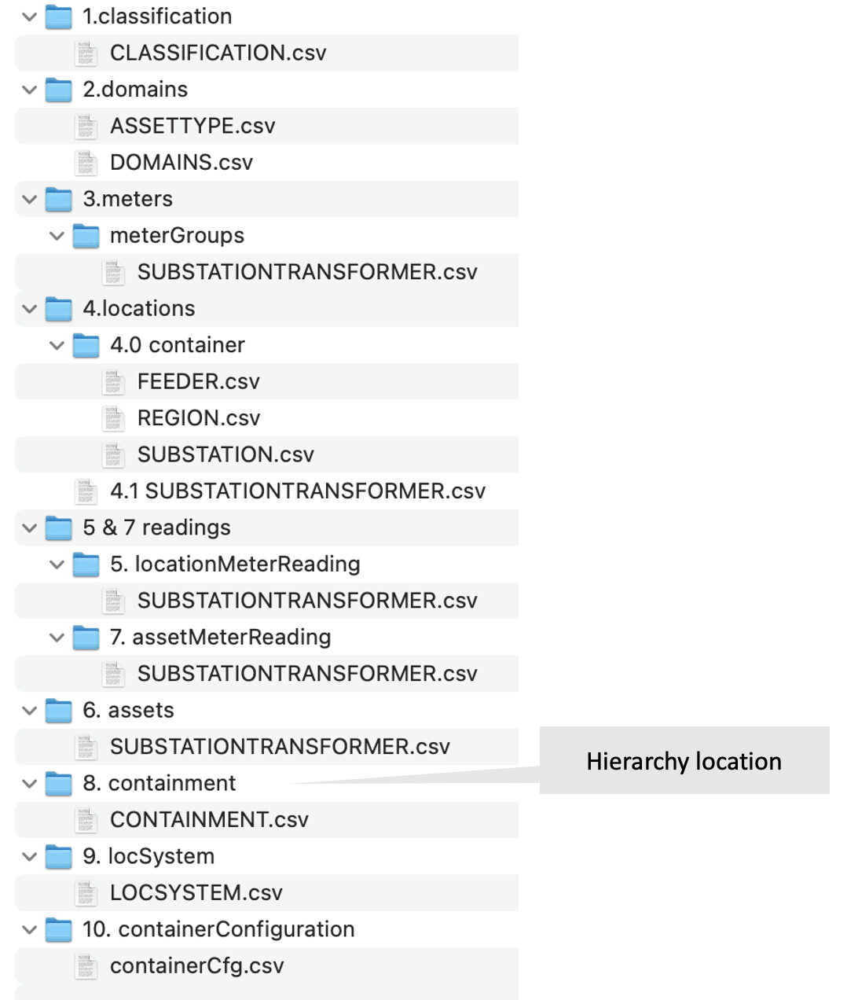
Out Of The Box Models
Health and Predict - Utilities includes the supported Asset Classes listed in table below:
| Asset class | Model |
|---|---|
| DISTRIBUTION TRANSFORMER | IBM Transformers Tap Changers 4.0.0 |
| SUBSTATION TRANSFORMER | IBM Transformers Tap Changers 4.0.0,IBM Transformers Tap Changers DGA 4.0.0 |
| INSTRUMENT TRANSFORMER | IBM Instrument Transformers Oil Filled CTs 4.0.0 |
| SWITCHGEAR | IBM Gas Insulated Switchgear 4.0.0 |
| UNDERGROUND TRANSMISSION MANHOLE | IBM Underground Transmission Manholes 4.0.0 |
| METAL SUPPORT STRUCTURE | IBM Metal Support Structures 4.0.0 |
| OVERHEAD TRANSMISSION WIRE | IBM Conductors 4.0.0 |
| POLE - Wood Power Pole | IBM Wood Pole Structures 4.0.0 |
| CIRCUITBREAKER - Oil Circuit Breaker | IBM Circuit Breakers Oil 4.0.0 |
| CIRCUITBREAKER - Air Blast Circuit Breaker | IBM Circuit Breakers Air Blast 4.0.0 |
| CIRCUITBREAKER - Air Magnetic Circuit Breaker | IBM Circuit Breakers Air Magnetic 4.0.0 |
| CIRCUITBREAKER - Vacuum Circuit Breaker | IBM Circuit Breakers Vacuum 4.0.0 |
| CIRCUITBREAKER - SF6 Circuit Breaker | IBM Circuit Breakers SF6 4.0.0 |
| UNDERGROUNDTRANSMISSIONCABLE - High Pressure Fluid Filled Pipe Type (HPFF) Cables | IBM HPFF Cables 4.0.0 |
| UNDERGROUNDTRANSMISSIONCABLE - Mass Impregnated (MI) Cables | IBM MI Cables 4.0.0 |
| UNDERGROUNDTRANSMISSIONCABLE - Self Contained Fluid Filled (SCFF) Cables | IBM SCFF Cables 4.0.0 |
| UNDERGROUNDTRANSMISSIONCABLE - Self Contained Gas Filled (SCGF) Submarine Cables | IBM SCGF Cables 4.0.0 |
| UNDERGROUNDTRANSMISSIONCABLE - Extruded Cross Linked Polyethylene (XLPE) Cables | IBM XLPE Cables 4.0.0 |
Note
Some asset classes have subtype, like Circuit Breaker or Underground Transmission Cable
HPU Model Calculation Methodology 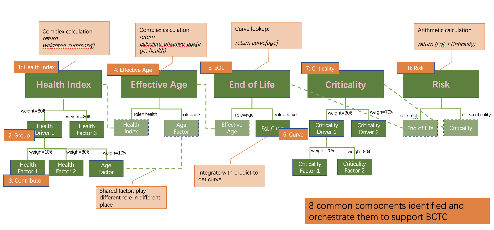
Create a Score Group
Create a Score Group for Substation Transformer Assets
1. Login and go to Health and Predict Utilities application. 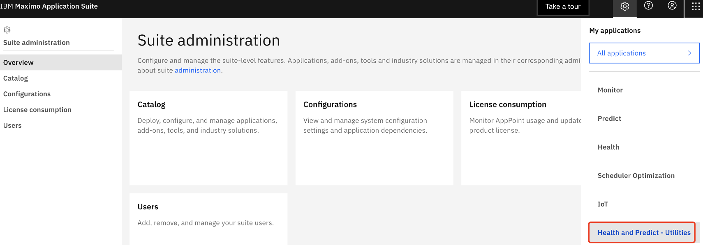
2. Click Scoring and DGA settings in the menu,in Scoring and DGA settings page, click Create a scoring and DGA group button.
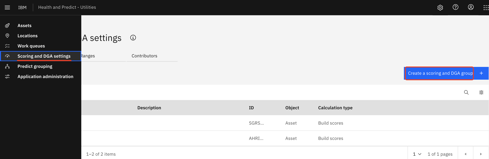
3. In the create score group page,fill in name,description, select Asset object,choose Connectigng group to notebook.
4. Then click Select to choose IBM Transformers Tap Changers DGA 4.0.0 notebook in the notebook list dialog,click Use notebook.
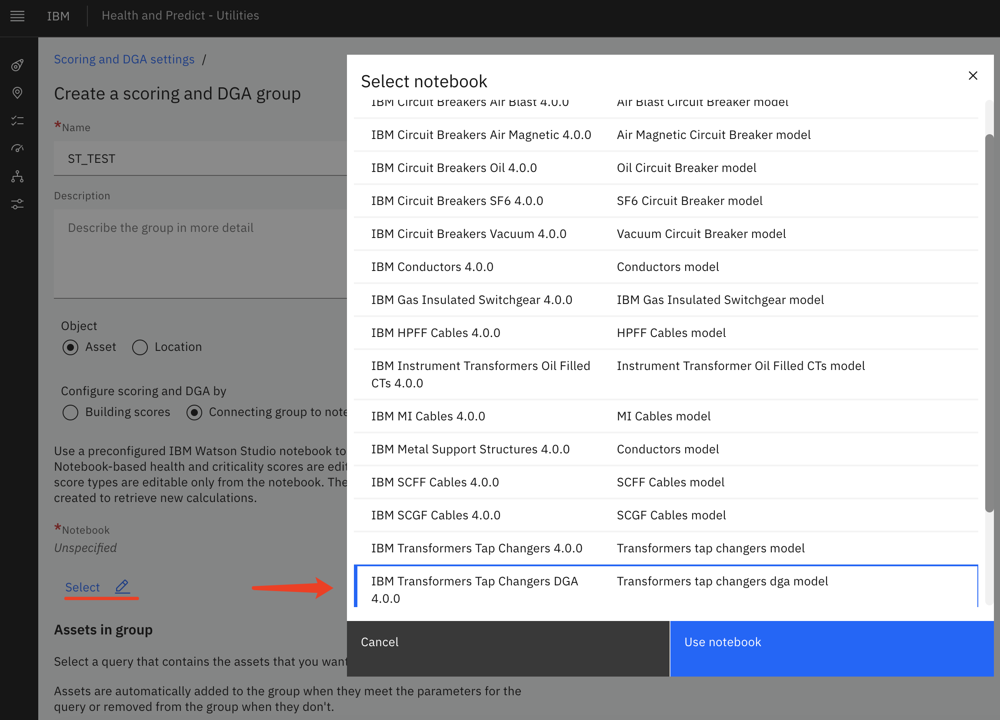
5. Scroll down query part, click Select to open query dialog, user can select an existing query, or click + button to create a new query for ST assets.
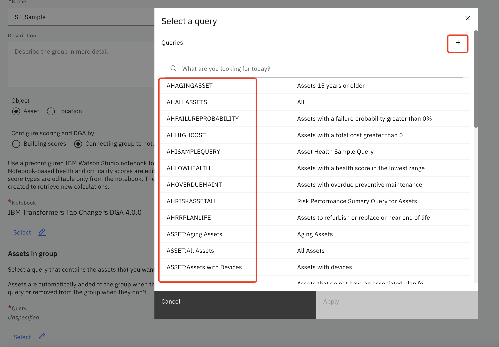
E.g Select site and classification for the new query.
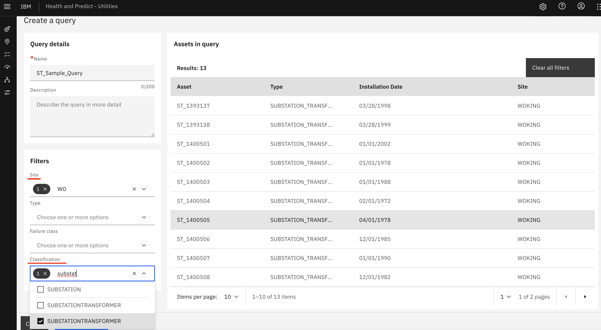
6. After select the notebook and query, click Create to create the score group.
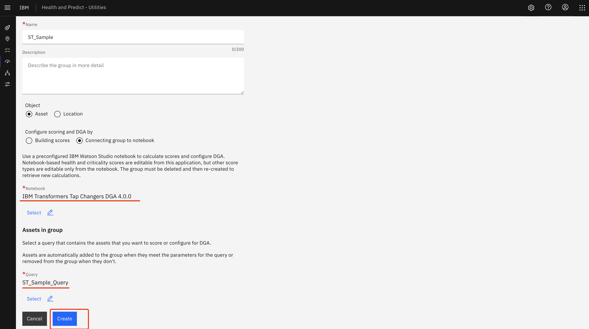
7. After score group is created, system will redirect to the score group detail page, in this page, user can see all the scores and the asset list. 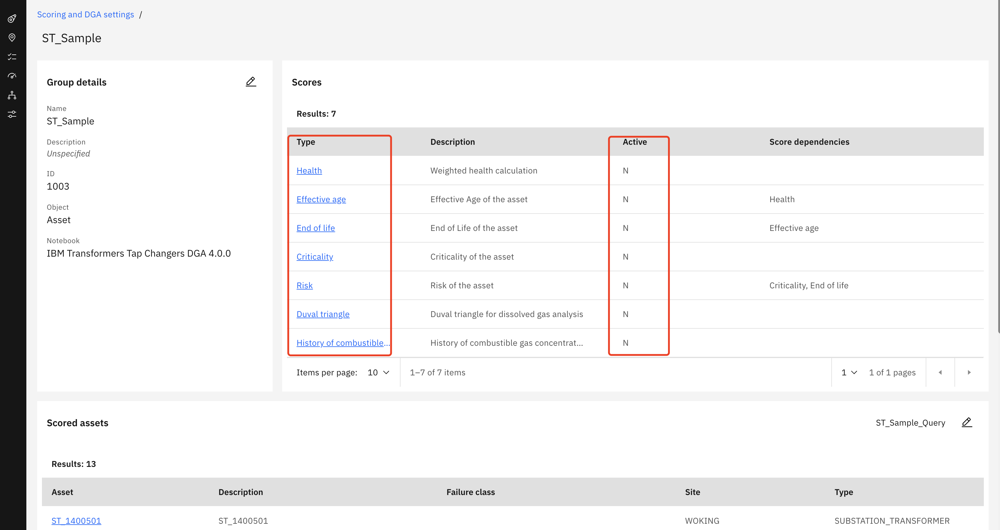
8. Click the score in the table, and active it on the right, scores need to be activated one by one based on the dependency. 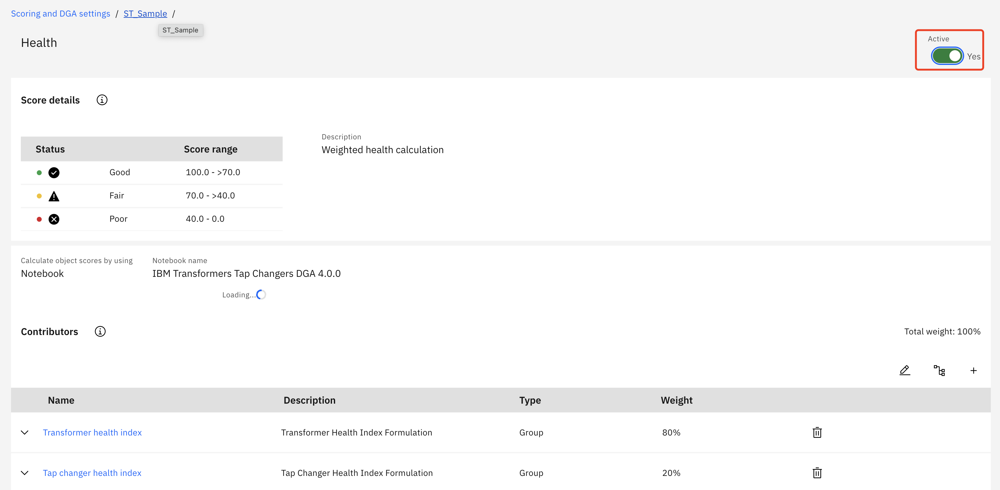
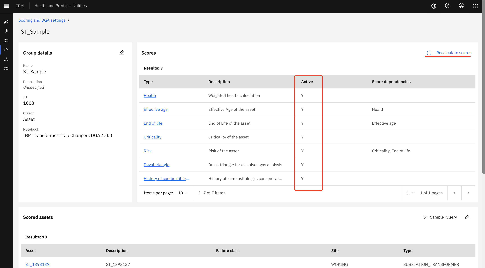
9. After activating all the scores, click the Recalculate scores to start the analysis.
Update and Schedule Notebooks
In this exercise you will check the notebook configuration file, notebook and the job, also update the notebook and save to latest version. You will also schedule Jobs to run the notebooks and do asset scoring by changing the cron task schedule.
In Health and Predict - Utilities, the scoring calculation happen in Watson Studio jobs. Each asset type has a configure file, notebook, and job deployed on Watson Studio project. When user clicks Recalculate scores on UI, it triggers the job to run, do the calculation, and save results to the Database.
Substation Transformer Model Configuration
For ST (Substation Transformer), configuration file is named IBM-Transformers-Tap-Changers-DGA-4.0.0.cfg.
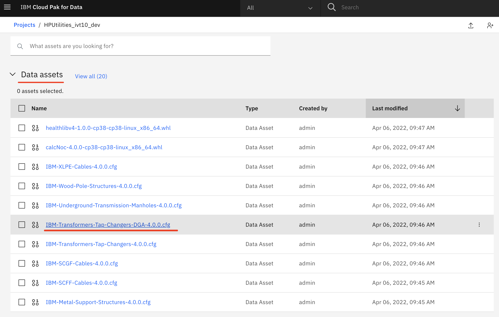
In the configuration file, under Common section defaultsetup.components has all the scores group, contributors listed, and functions and parameters for each item. In defaultsetup.dependencies section describes the dependencies. E.g Health depends on Transformer health index and Tap changer health index, Transformer health index group calculated based on several contributors. Function details can be found in [ext_function_name] in the file named. E.g For Health ext_function_name is configured as [Health Weighted], the implementation is common_calculate_weighted which is pre-defined in healthlib.
Example Configuration
[Common]
name = IBM Transformers Tap Changers DGA 4.0.0
desc = Transformers tap changers dga model
notebook = IBM-Transformers-Tap-Changers-DGA-4.0.0
job = Run-IBM-Transformers-Tap-Changers-DGA-4-0-0
usewith = asset,locations
defaultsetup.components =
type, name, ext_function_name, description, parameters
"CONTRIBUTOR","Bushing condition", "Bushing Condition", "Bushing condition contributor","Condition meter=B-CONDIT"
"CONTRIBUTOR","Oil leaks","Oil Leaks","Oil leaks contributor","Condition meter=OIL-LEAKS"
"CONTRIBUTOR","Main Tank/Cabinets and control condition","Main Tank/Cabinets and Control Condition","Main Tank/Cabinets and control condition contributor","Condition meter=MAIN-TCC"
"CONTRIBUTOR","Conservator/Oil preservation system condition","Conservator/Oil Preservation System Condition","Conservator/Oil preservation system condition contributor","Condition meter=CO-PRES"
"CONTRIBUTOR","Radiators/Cooling system condition","Radiators/Cooling System Condition","Radiators/Cooling system condition contributor","Condition meter=RC-SYS"
"CONTRIBUTOR","Foundation/Support Steel/Grounding condition","Foundation/Support Steel/Grounding Condition","Foundation/Support Steel/Grounding condition contributor","Condition meter=FS-SG"
"CONTRIBUTOR","Overall power transformer condition","Overall Power Transformer Condition","Overall Power Transformer Condition contributor","Condition meter=OVER-PT"
"CONTRIBUTOR","Winding doble test","Winding Doble Test","Winding Doble Test contributor","Condition meter=WINDDT"
"CONTRIBUTOR","Oil quality test","Oil Quality Test","Oil Quality Test contributor","Condition meter=OIL-QT"
"CONTRIBUTOR","Thermograph (IR)","Thermograph (IR)","Thermograph (IR) contributor","Condition meter=ST-THERM"
"CONTRIBUTOR","Bushing DGA analysis","Bushing DGA Analysis","Bushing DGA Analysis contributor","Condition meter=B-DGAOA"
"CONTRIBUTOR","Furan oil analysis","Furan Oil Analysis","Furan Oil Analysis contributor","Condition meter=FUR-OA"
"CONTRIBUTOR","DGA oil analysis","DGA Oil Analysis","DGA Oil Analysis contributor","H2 meter=DGAR-H2,CH4 meter=DGAR-CH4,C2H6 meter=DGAR-C2H6,C2H4 meter=DGAR-C2H4,C2H2 meter=DGAR-C2H2,CO meter=DGAR-CO,CO2 meter=DGAR-CO2"
"GROUP", "Transformer health index","Group","Transformer Health Index Formulation",
"CONTRIBUTOR","Tap changer tank condition","Tap Changer Tank Condition","Tap Changer Tank Condition contributor","Condition meter=TANK-CON"
"CONTRIBUTOR","Tap changer tank leaks","Tap Changer Tank Leaks","Tap Changer Tank Leaks contributor","Condition meter=TANK-L"
"CONTRIBUTOR","Tap changer gaskets, seals and pressure relief condition","Tap Changer Gaskets, Seals and Pressure Relief Condition","Tap Changer Gaskets, Seals and Pressure Relief Condition contributor","Condition meter=GS-PR"
"CONTRIBUTOR","Tap changer LTC control and mechanism cabinet","Tap Changer LTC Control and Mechanism Cabinet","Tap Changer LTC Control and Mechanism Cabinet contributor","Condition meter=LTC-CMC"
"CONTRIBUTOR","Tap changer control and mechanism cabinet component condition","Tap Changer Control and Mechanism Cabinet Component Condition","Tap Changer Control and Mechanism Cabinet Component Condition contributor","Condition meter=CTRMEC-CO"
"CONTRIBUTOR","Overall tap changer condition","Overall Tap Changer Condition","Overall Tap Changer Condition contributor","Condition meter=OVER-TCC"
"CONTRIBUTOR","Tap changer oil analysis (DGA Metal Content)","Tap Changer Oil Analysis (DGA Metal Content)","Tap Changer Oil Analysis (DGA Metal Content) contributor","Condition meter=TC-OQT"
"CONTRIBUTOR","Tap changer oil quality test","Tap Changer Oil Quality Test","Tap Changer Oil Quality Test contributor","Condition meter=TC-QT"
"GROUP", "Tap changer health index","Group","Tap Changer Health Index Formulation",
"CONTRIBUTOR", "Age", "Age", "Age function contributor",""
"CONTRIBUTOR", "Number of customer", "Number of Customer", "Number of Customer contributor","NOC attribute=NUMBEROFCUSTOMERS,Feeder attribute=FEEDER"
"SCORE", "Health", "Health Weighted", "Weighted health calculation",
"SCORE", "Effective age", "Effective Age", "Effective Age of the asset","Mean life=30"
"SCORE", "End of life", "End Of Life", "End of Life of the asset",
"SCORE", "Criticality", "Criticality", "Criticality of the asset",
"SCORE", "Risk", "Risk", "Risk of the asset",
"SCORE", "Duval triangle score", "Duval Triangle Score","Duval triangle for dissolved gas analysis",
"SCORE", "History of combustible gas concentration", "DGA Trend Score","History of combustible gas concentration",
defaultsetup.dependencies =
parent, child, role, weight
"Transformer health index","Bushing condition",,"3"
"Transformer health index","Oil leaks",,"3"
"Transformer health index","Main Tank/Cabinets and control condition",,"3"
"Transformer health index","Conservator/Oil preservation system condition",,"3"
"Transformer health index","Radiators/Cooling system condition",,"3"
"Transformer health index","Foundation/Support Steel/Grounding condition",,"3"
"Transformer health index","Overall power transformer condition",,"8"
"Transformer health index","Winding doble test",,"14"
"Transformer health index","Oil quality test",,"10"
"Transformer health index","Thermograph (IR)",,"8"
"Transformer health index","Bushing DGA analysis",,"14"
"Transformer health index","Furan oil analysis",,"14"
"Transformer health index","DGA oil analysis",,"14"
"Health","Transformer health index",,"80"
"Tap changer health index","Tap changer tank condition",,"6"
"Tap changer health index","Tap changer tank leaks",,"6"
"Tap changer health index","Tap changer gaskets, seals and pressure relief condition",,"6"
"Tap changer health index","Tap changer LTC control and mechanism cabinet",,"6"
"Tap changer health index","Tap changer control and mechanism cabinet component condition",,"6"
"Tap changer health index","Overall tap changer condition",,"21"
"Tap changer health index","Tap changer oil analysis (DGA Metal Content)",, "28"
"Tap changer health index","Tap changer oil quality test",,"21"
"Health","Tap changer health index",,"20"
"Criticality", "Number of customer",,"100"
"Effective age", "Health", "HEALTH", ""
"Effective age", "Age", "AGE", ""
"End of life", "Effective age", "EFFECTIVEAGE",""
"Risk", "Criticality", "CRITICALITY", ""
"Risk", "End of life", "EOL", ""
.......
[Group]
type = GROUP
desc = Group of contributors
impl = common_calculate_weighted
calctype = WEIGHT
[Health Weighted]
type = SCORE
scoretype = HEALTH
desc = Weighted scores from each contributor
impl = common_calculate_weighted
calctype = WEIGHT
[End Of Life]
type = SCORE
scoretype = EOL
desc = End of life of the asset
impl = common_calculate_end_of_life
calctype = NONE
roles = EFFECTIVEAGE
parameter.curve.name = Curve
parameter.curve.type = string
parameter.curve.desc = Curve of assets
parameter.curve.default = 1,2,3,4,5,6,7,8,9,10,11,12,13,14,15,16,17,18,19,20,21,22,23,24,25,26,27,28,29,30,31,32,33,34,35,36,37,38,39,40,41,42,43,44,45,46,47,48,49,50,51,52,53,54,55,56,57,58,59,60,61,62,63,64,65,66,67,68,69,70,71,72,73,74,75,76,77,78,79,80,81,82,83,84,85,86,87,88,89,90,91,92,93,94,95,96,97,98,99,100
[Effective Age]
type = SCORE
scoretype = EFFECTIVEAGE
desc = Effective age score
impl = common_calculate_effective_age
calctype = NONE
roles = HEALTH,AGE
# parameter.<id>.<item>
parameter.mean_life.name = Mean life
parameter.mean_life.type = number
parameter.mean_life.format = decimal
parameter.mean_life.desc = mean life of the asset
parameter.mean_life.default = 30
[Criticality]
type = SCORE
scoretype = CRITICALITY
desc = Criticality score
impl = common_calculate_weighted
calctype = WEIGHT
[Risk]
type = SCORE
scoretype = RISK
desc = Risk score
impl = common_calculate_risk
roles = EOL,CRITICALITY
calctype = NONE
Below is the dependency of out of the box Substation Transformer scores.
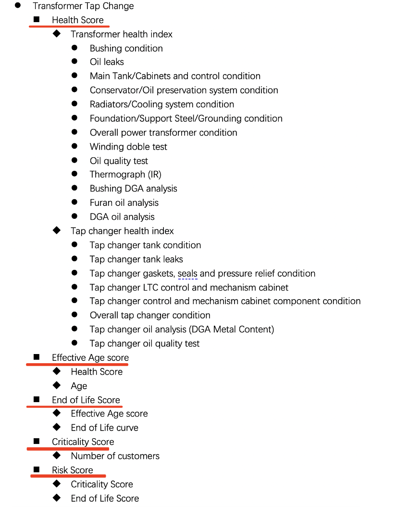
Substation Transformer Model Notebook
For ST(Substation Transformer), notebook is IBM-Transformers-Tap-Changers-DGA-4.0.0.ipynb as configured in cfg file.

Any permenant modification on notebook, will need save to a latest version to take affect, because each job binds with a version of the notebook, by default it's the Latest version.
ST Watson Studio Job
Job is Run-IBM-Transformers-Tap-Changers-DGA-4-0-0.Detailsand can be checked using the steps below.
1. Login to Watson Studio, enter the project, and click the Job tab, click the job defined in configruation file, and then click Edit Configuration, click Next and Next, we can see by default it binds to latest version and runtime is Default Python 3.8, close the edit page by clicking X on the right corner.
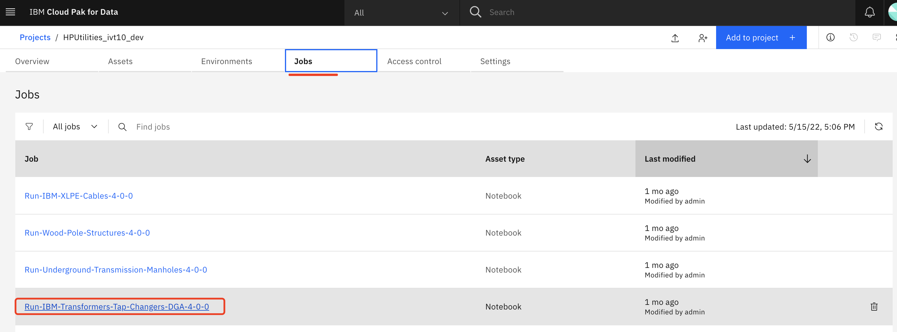
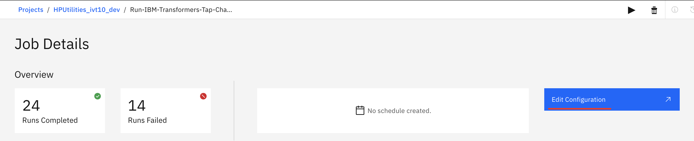

2. Log can be checked by clicking on one of the history runs, either check directly on the page or download to local. 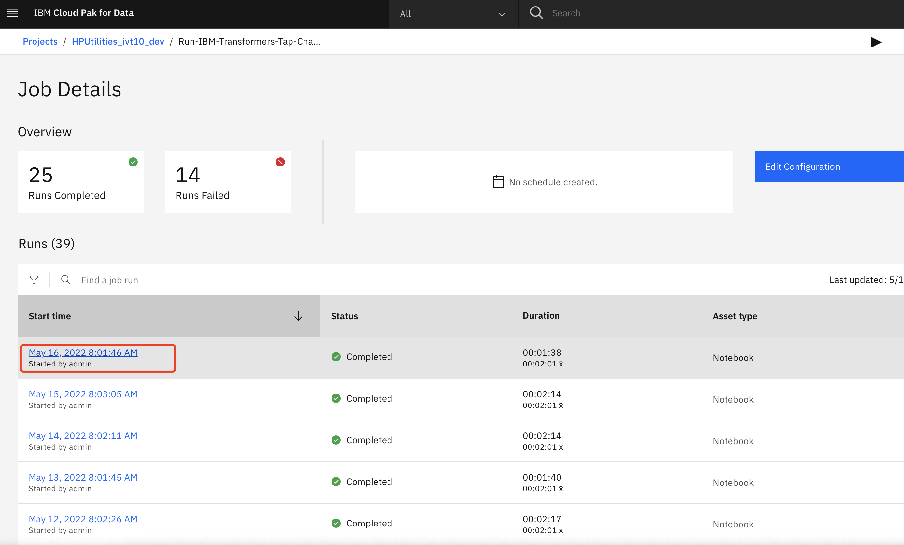
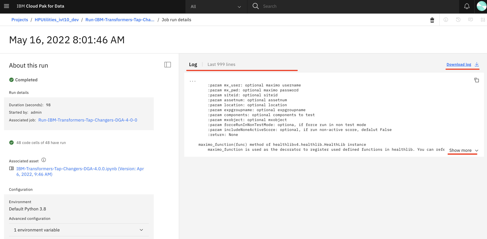
Customize Notebook Model for NOC
Users can change how the scores are calculated as needed in the Notebooks.
For example, for customize the Criticality which is calculated 100% weight of NOC (Number Of Customers) by default.
Login Watson Studio, enter the project, click the Assets tab, enter the notebook IBM-Transformers-Tap-Changers-DGA-4.0.0.ipynb,find the cell which defined function calculate_number_of_customer, comment out the old code, and write new customize NOC functiion based on customer's own methodology. Then save a latest version.
//Code example.
@maximo_function
def calculate_number_of_customer(context,targetType=None):
//Input customized logic here......
logger = healthlib.get_logger()
noc_attr = context.get_parameter(name='NOC attribute')
logger.debug('Noc attribute=%s', noc_attr)
noc = context.get_spec(noc_attr)
logger.debug('noc=%s', noc)
result = min(100,max(0, 100 * noc/10000))
return result
Update scheduler for cron task instance created during score group set up
User can change the schedule by changing the crontask instance's schedule.
1. Login and go to Health and Predict Utilities application, click Scoring and DGA settings in the menu, and search for the score group just created, click to enter the group details page to get the group id which later will be used to find the corresponding crontask instance.
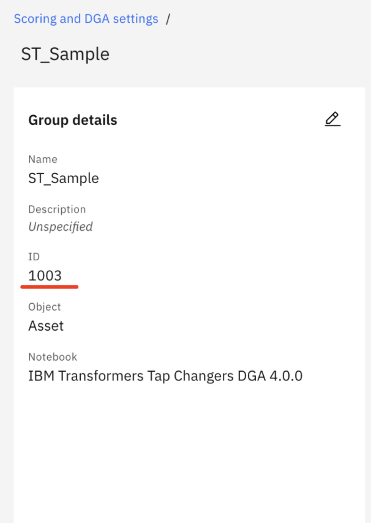
2. Click Administration administration to go to Administration page. Then click Cron Task Setup to enter the crontask application.
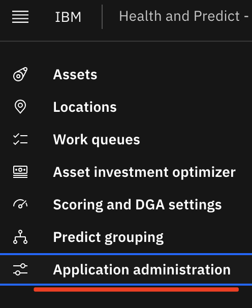
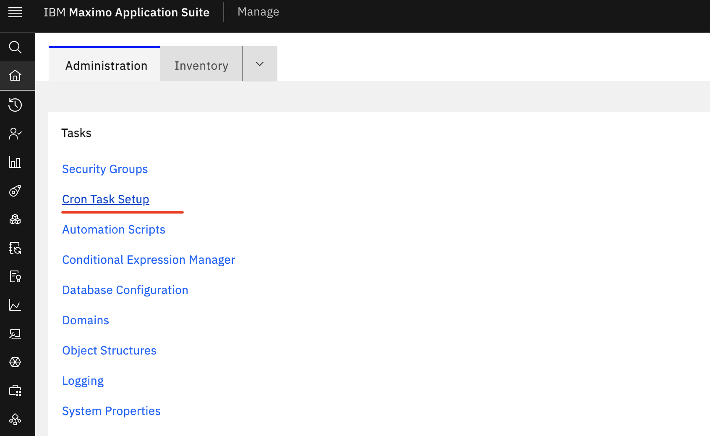
3. Search for AHSCORINGGROUP cron task. And click to enter the crontask detail page.
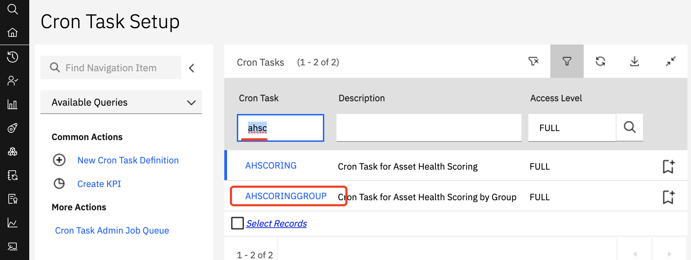
User can trigger the analysis by clcik Reload Request under More actions, choose the crontask instance that matches score group id.
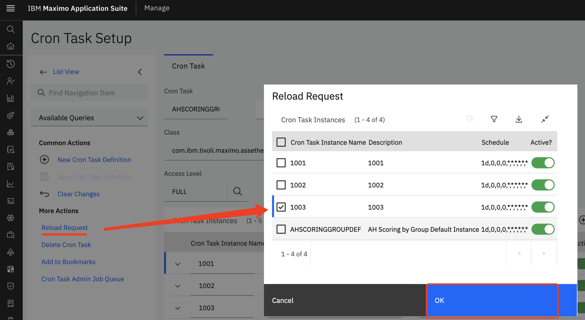
User can also click calendar icon to update the schedule for the cron task instance which has the same id as group id. 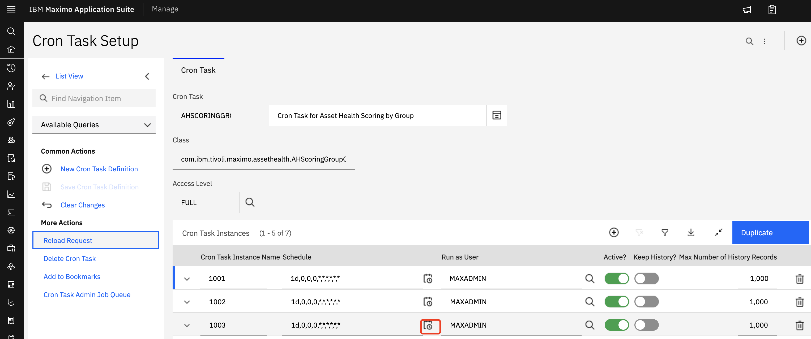
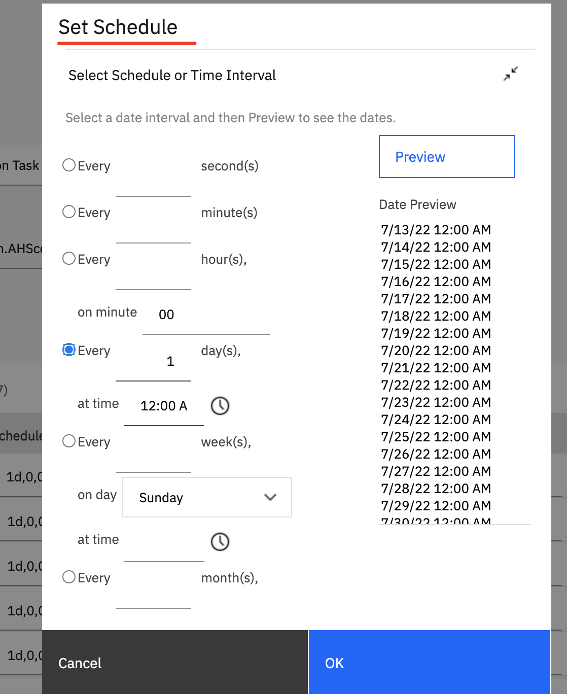
Troubleshoot
Enable Debug Mode
For a small group of assets, user can enable debug mode for debugging the model.
- Login Watson Studio, enter the project, click the
Assetstab, enter the notebookIBM-Transformers-Tap-Changers-DGA-4.0.0.ipynb, click the pencil icon to edit,find the cellhealthlib.set_log_level(level='INFO'), change tohealthlib.set_log_level(level='DEBUG').Then save to a latest version. - Login Health and Predict Utilities application, go to
Scoring and DGA settings, enter the related group, click theRecalculate scoresto trigger a new analysis. - After the calculation finishes, go back to Watson Studio, click the
Jobtab, then click the correspoding job for the score group. - A new page will open where user can edit the job and or check the job history. Click latest finished job history to check the debug logs.
Run Notebook Directly for Debugging Purpose
If user want to directly run the notebook to calculate the score for debug purpose instead of the job, user can add some enviroment variables in notebook temporarily.
1. Login Watson Studio, enter the project, click the Assets tab, enter the notebook IBM-Transformers-Tap-Changers-DGA-4.0.0.ipynb, click the pencil icon to edit. Click plus button to add a new cell on top, and put below code sample with actual value.
Here are some code examples for debugging.
Code example for debugging on a certain score group.
import os
os.environ['maximo_context'] = '{"maximoUrl":"https://<health or manage host>/maximo/","maximoApiKey":"**************","expgroupname":"1003"}'
Code example for debugging on an individule asset.
import os
os.environ['maximo_context'] = '{"maximoUrl":"https://<health or manage host>/maximo/","maximoApiKey":"**************","expgroupname":"1003","siteid":"***","assetnum":"***"}'
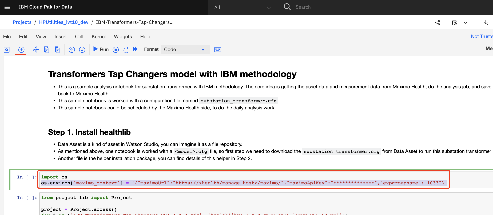
maximoApiKey can be found in Application administration page. Login Health and Predict – Utilities and click the Application administration page, click to the Start Center and in the Go To section, click Administration.On the API Keys tab, search and find maxadmin's apikey.
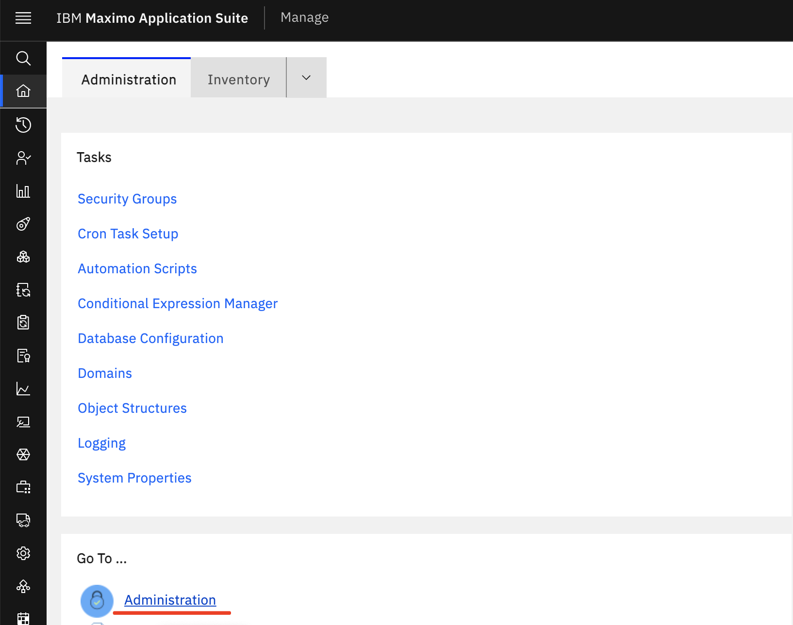

expgroupname can be found in score group detail page.

For <health or manage host> in maximoUrl can be extracted from health url.
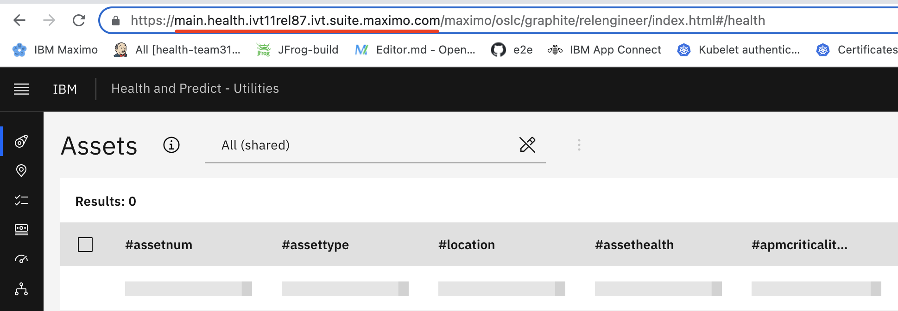
2. Click Run to run cell by cell or restart the kernel run the whole notebook.
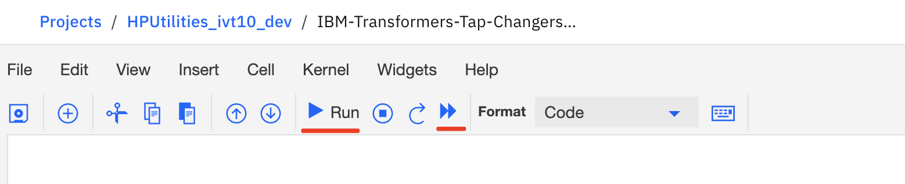
Note
When debugging in notebook directly, do not save as latest version, since it's hardcoded. The corresponding job should instead get those inputs from Health during the runtime.
Congratulation you learned about the Substation Transformer Models included with Health and Predict - Utilities (HPU) and create a Score Groups. You also can now modify, schedule and debug the model notebooks.